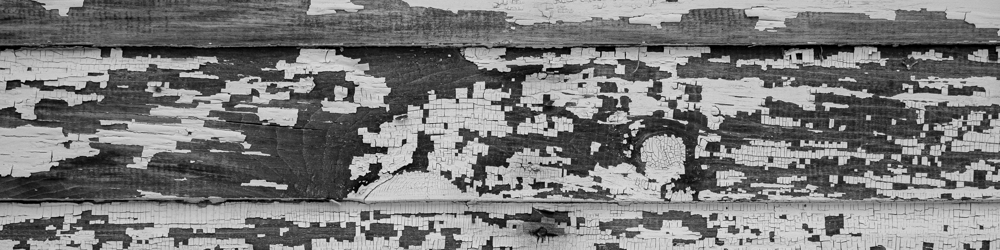
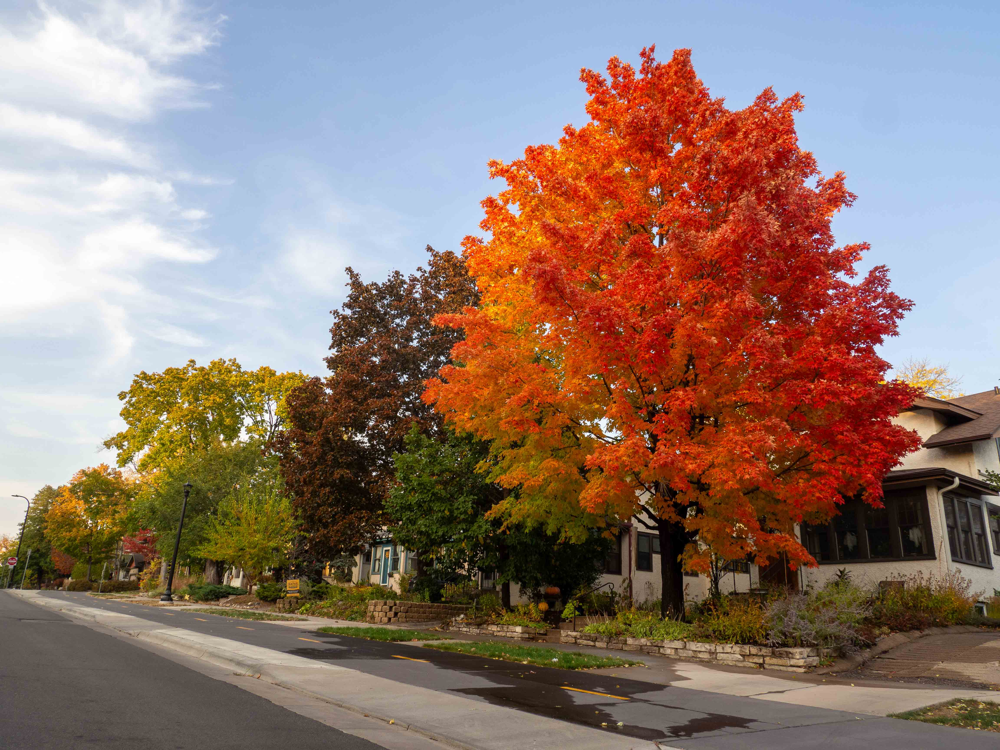
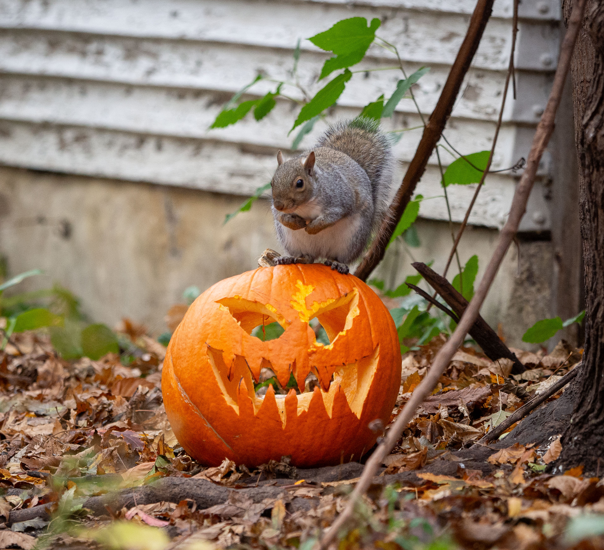
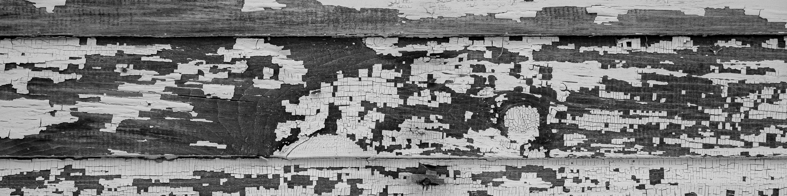
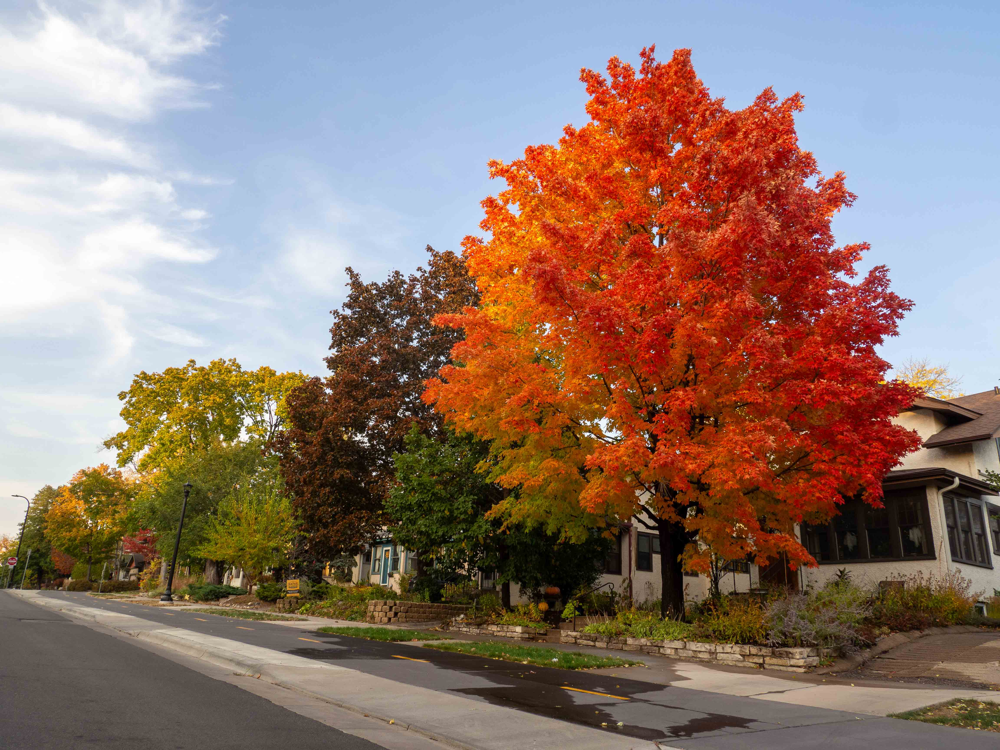
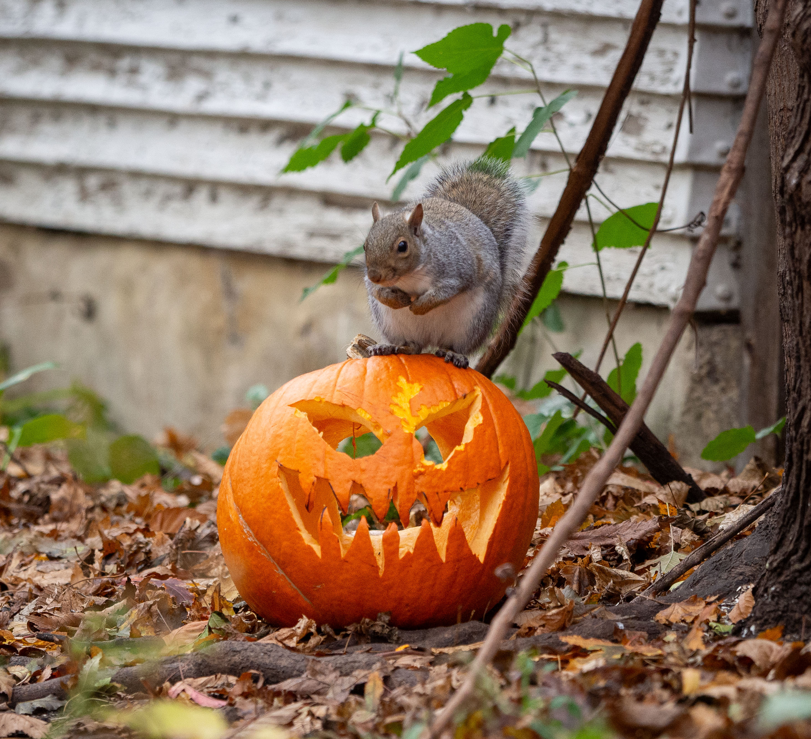

I've been shooting photos for work and for fun since late 2018, when I bought a used Olympus OM-D E-M10 Mark ii. It's been my go-to camera ever since, even with its lack of waterproofing and now-broken touchscreen. I've shot protests, profiles, sports, slice-of-life vignettes, landscapes, birds, signing ceremonies, senior pictures and more. At the Ketchikan Daily News, I filled in while we were in between photographers, and I'm proud of the excellent photos I've consistently delivered.


